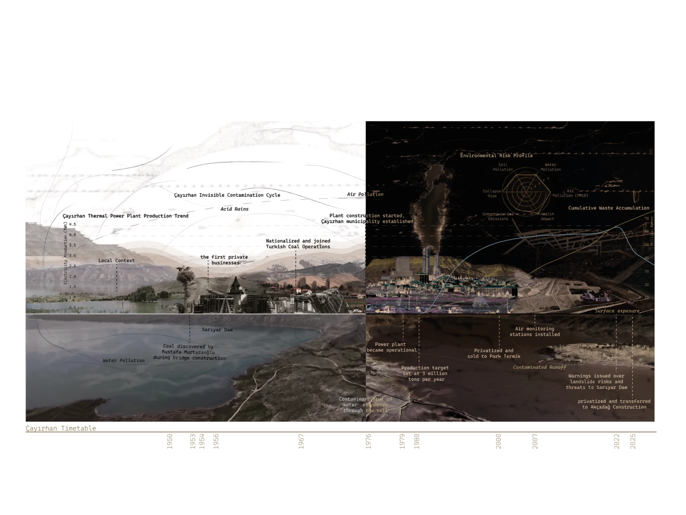

This collage is a spatio-temporal analysis of the industrial production of the Çayırhan Thermal Power Plant from the 1950s to 2025, documenting the ecological damage this process has inflicted on the landscape. The chronological flow traces the economic growth that began with the discovery of coal, followed by the commissioning of the power plant and its subsequent privatization. Ultimately, the visual serves as a critical timeline of this industrial expansion, illustrating how air, soil, and water have been progressively contaminated over time.